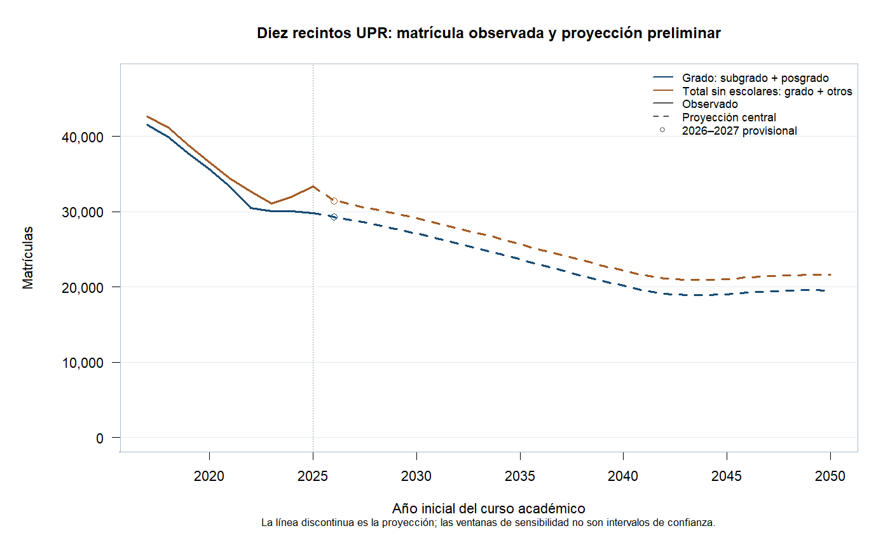
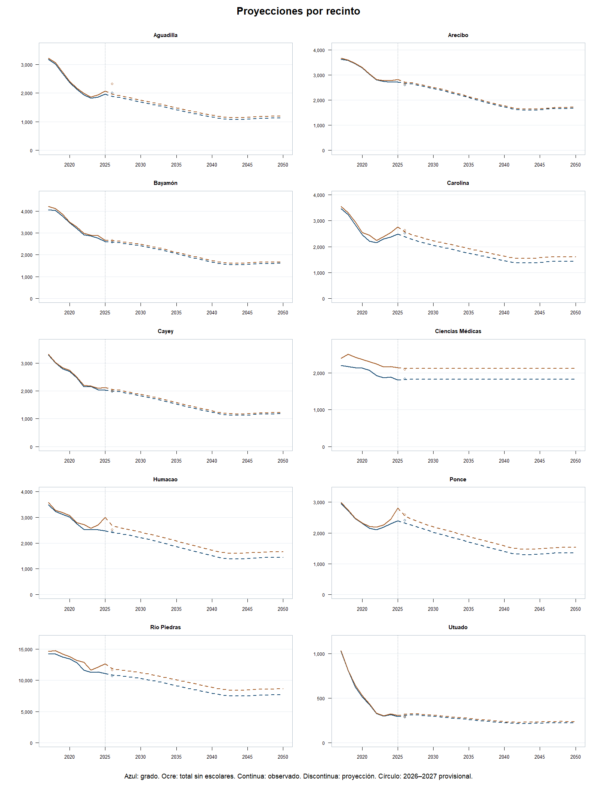

Proyección preliminar de matrícula
Base: 2025–2026. Horizonte: 2050–2051. Ventana central: 5 años.
El agregado comprende diez recintos. Falta Mayagüez y, por ello, no representa la matrícula completa del sistema UPR. Las cifras futuras son resultados de un modelo preliminar.
Grado identificado suma subgrado y posgrado. Total sin escolares añade otros registros no homologados del censo; no equivale a grado certificado. Las personas se deduplican dentro de cada recinto; sumar recintos no identifica personas únicas de todo el sistema.

Matrícula de grado por recinto
Total sin escolares por recinto
Validación retrospectiva condicionada al insumo escolar
Cada corte utiliza únicamente información universitaria hasta ese año. La prueba está condicionada a G12 del curso previo y a las versiones actuales de los archivos históricos; no reproduce fechas de publicación ni archivos históricos congelados. La referencia conserva la matrícula del último censo. MAE es el error absoluto medio y WMAPE divide la suma de errores absolutos entre la matrícula observada total.
Sensibilidad a la ventana histórica
Las ventanas de tres y cinco años muestran sensibilidad a la calibración. No constituyen intervalos de confianza ni de predicción.
Supuestos del modelo
- El subgrado distingue seis estados: años 1, 2, 3, 4, 5 o más y Sin origen. La clasificación académica no se interpreta como antigüedad. El estado 5 o más admite un origen asignado por evidencia o una cota temporal mínima; no expresa cursos efectivamente matriculados.
- La matrícula siguiente combina continuidad entre estados, ingreso desde secundaria y promedio histórico de otras incorporaciones. Las matrices conservan diferencias por recinto y grado.
- La captación usa cocientes entre nuevo ingreso consistente y matrícula G12 observada; la serie observada permite cocientes hasta el ingreso de 2024. G12 es matrícula de duodécimo, no graduados efectivos.
- G12 futura sigue un escenario proporcional a la población de edad 17, según la mediana demográfica aportada e interpolada anualmente. Conserva la proporción pública/privada de 2025; no recalcula GPR escolares futuros ni produce intervalos predictivos.
- Posgrado y otros componentes usan persistencia multiplicada por matrícula previa más incorporaciones promedio. Con exposición inferior a 100 o sin salidas observadas, el stock se mantiene constante.
- 2026–2027 queda como contraste porque no se ha certificado la consolidación de su censo inicial. La falta del segundo semestre no invalida por sí sola un censo de inicio. Se conserva la información recibida sin completar períodos.
Anclas escolares quinquenales
Trayectorias de los diez recintos

Los conteos mostrados se redondean al entero; los cálculos conservan su precisión. Una salida del censo no distingue graduación, abandono, pausa ni traslado.